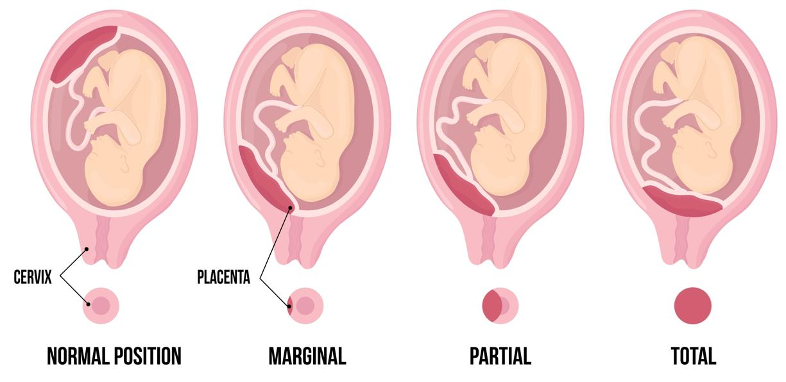

Placenta previa is a condition in which the placenta covers all or part of the opening of the cervix during pregnancy. The placenta is a special organ that grows during pregnancy to give the baby oxygen and food from the mother. The cervix is the lower part of the uterus. The cervix opens, or dilates, during labor to allow the baby to be born.
Normally, the placenta is not near the cervix. If the placenta covers the cervix, it can cause bleeding and problems when the cervix starts to open and during birth. Placenta previa can be found by ultrasound in the second or third trimester.

Pregnancy with placenta previa can feel stressful. You are not alone. Many people have healthy births with care and support. Your care team is here to help you and your baby stay safe.
You have a higher risk for placenta previa if:
You have been pregnant before, especially with twins or more.
You have had surgery on the uterus before.
You are over 35.
You smoke during pregnancy.
The pregnancy was conceived with in vitro fertilization.
There may be bleeding from the vagina, usually without pain, in the second or third trimester.
Most of the time, placenta previa is found during a routine prenatal ultrasound. This test uses sound waves to show the baby and the placenta inside the uterus.
If you have placenta previa, your care team may suggest:
Rest and no heavy lifting
Pelvic rest, meaning no sex, tampons, douches, or anything else in the vagina
Frequent checkups to track the issue
Medicine to help prevent an early birth
Steroid shots to help the baby’s lungs grow in case of early labor
Possibly, planning for birth by Cesarean delivery, or C-section
If not managed, placenta previa can lead to:
Dangerous bleeding during birth
Need for blood transfusions
Early birth, which may mean the baby needs extra care
The position of the placenta is not something parents can control or cause. It is important to:
Go to your prenatal visits and scheduled ultrasounds. This way, your care team can find placenta previa early in pregnancy to prepare for delivery.
Avoid smoking during pregnancy to lower the risk.
With careful monitoring and planning, nearly all women with placenta previa have healthy deliveries when followed by their care team.
How often do I need checkups?
What should I do if I notice bleeding?
What are my delivery options?
Call your care team if you notice:
Any vaginal bleeding during your pregnancy, even if it is light or painless
Any pain or cramping
Any changes in baby movement patterns
New symptoms or concerns you want to discuss
Get help right away if you have:
Heavy vaginal bleeding, like a period or worse
Severe abdominal pain or contractions that do not go away
Symptoms of shock, such as feeling weak, dizzy, or fainting
Thank you for trusting us with your care. We are here to support you and want you to feel your best. Contact us with any questions.
IF YOU HAVE A MEDICAL EMERGENCY, CALL 911 OR GO TO THE EMERGENCY ROOM.
The information presented is intended for general information and educational purposes. It is not intended to replace the advice of your health care provider. Contact your health care provider if you believe you have a health problem.
Last updated May 2025
© 2025 Mytonomy, Inc. All rights reserved.